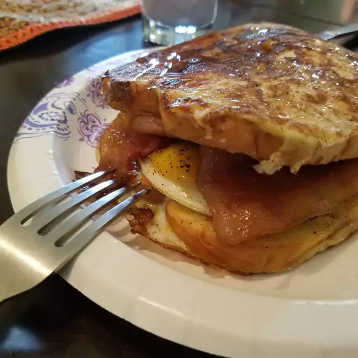

Go back to index
French Egg and Bacon Sandwich

Description
French Toast with egg and bacon in the center with maple syrup on top.
Sprinkle with powdered sugar if desired.
Ingredients
- 2 eggs, beaten
- 4 slices bread
- 4 slices bacon
- 2 eggs
- ½ cup maple syrup
Steps
- Dip bread slices in beaten eggs.
Heat a lightly oiled griddle or frying pan over medium high heat. Cook until browned on both sides.
Set aside but keep warm.
- Place bacon in a large, deep skillet. Cook over medium high heat until evenly brown. Drain and set aside. Reserve 1
tablespoon of bacon grease in pan and fry remaining two eggs.
- Place one piece of French toast on each of two plates. Place the fried eggs on top of the bread, top the eggs with strips of bacon. Cover with the remaining pieces of
French toast. Following that by pouring on the syrup.